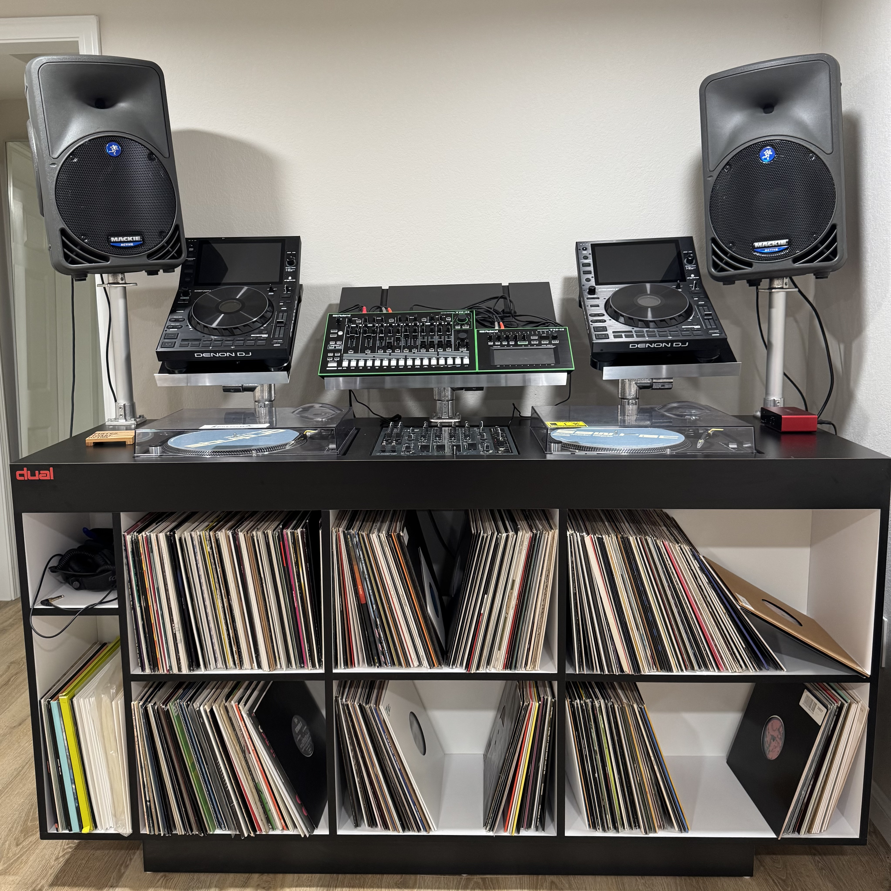
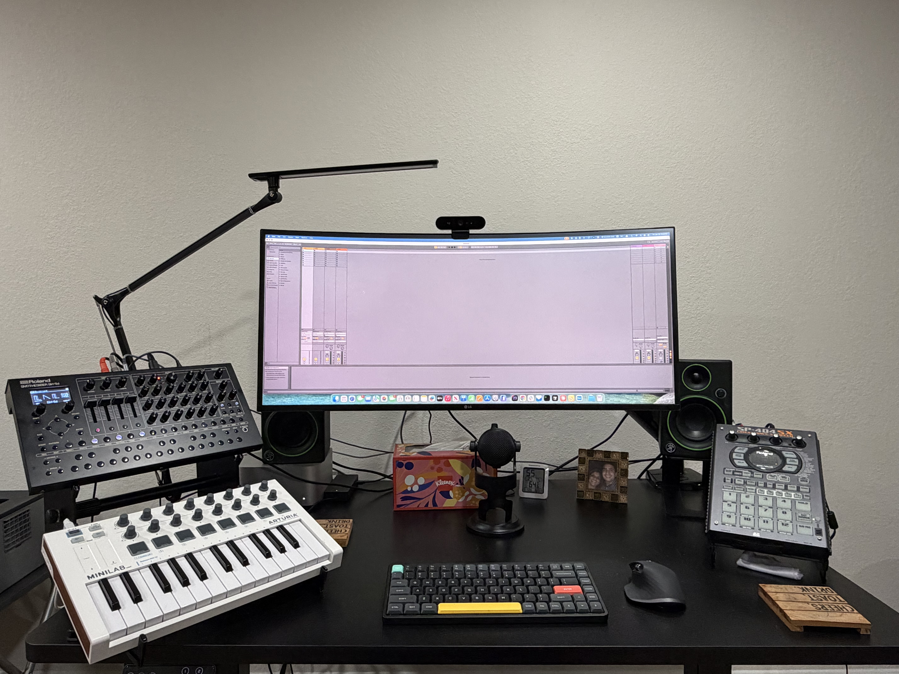

Music & studio
Addicted to buying vinyl and gear
DJ setup

| Gear | In the rig | Product page |
|---|---|---|
| Mackie SRM 350 (pair) | Powered loudspeakers on poles for the booth. | Mackie — SRM 350 |
| Denon DJ SC6000 Prime (×2) | Standalone media players with touchscreen and platters. | Denon DJ — SC6000 Prime |
| Roland TR-8 | AIRA rhythm performer — TR-808 / TR-909 sounds and sequencing. | Roland — TR-8 |
| Roland TB-3 | AIRA Touch Bassline — TB-303–style bass and sequencing. | Roland — TB-3 |
| Technics SL-1200MK2 (×2) | Classic direct-drive turntables for vinyl. | Wikipedia — Technics SL-1200 |
| Allen & Heath Xone:92 | Four-channel analog DJ mixer — the heart of the blend. | Allen & Heath — Xone:92 |
| Focusrite Scarlett Solo | USB audio interface for recording and routing. | Focusrite — Scarlett Solo |
| AIAIAI TMA-2 DJ Wireless | Modular DJ headphones — cueing and monitoring in the booth. | AIAIAI — TMA-2 DJ Wireless |
Production desk

| Gear | In the setup | Product page |
|---|---|---|
| Arturia MiniLab 3 | USB MIDI keyboard with pads and DAW control. | Arturia — MiniLab 3 |
| Roland SH-4d | Desktop synthesizer — SH-101 modeling, vocoder, sequencing, and Zen-Core sounds. | Roland — SH-4d |
| Ableton Live | Digital audio workstation for producing and performing. | Ableton — Live |
| Roland SP-404SX | Linear wave sampler / performance pad machine. | Roland — SP-404SX |